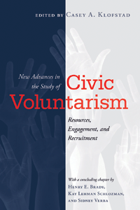

<body bgcolor="#FFFFFF" text="#000000" link="#0000FF" vlink="#CC0000" alink="#CC0000"><center><hr width="350" size="1" align="center" noshade>Cutting-edge research by prominent social scientists on new topics and methods of inquiry in the field of civic participation<hr width="350" size="1" align="center" noshade><p><a href="https://cdcshoppingcart.uchicago.edu/Cart/ChicagoBook.aspx?ISBN=&&PRESS=temple" target="_top">Buy this book!</a> | <a href="https://cdcshoppingcart.uchicago.edu/Cart/Cart.aspx?PRESS=temple" target="_top">View Cart</a> | <a href="https://cdcshoppingcart.uchicago.edu/Cart/Cart.aspx?PRESS=temple" target="_top">Check Out</a></p><p></p></center><!--none//--><h1 class = "booktitle">New Advances in the Study of Civic Voluntarism</h1> <h1 class = "subtitle">Resources, Engagement, and Recruitment</h1>
<h3>Edited by Casey A. Klofstad</h3>
paper: $34.95, Aug 16<BR>EAN:&nbsp;978-1-4399-1325-3<BR><font color=#990033>Available</FONT><font size=-7><br>&nbsp;</font></p><p class="info">cloth: $94.50, Sep 16<BR>EAN:&nbsp;978-1-4399-1324-6<BR><font color=#990033>Not Yet Published Preorder</FONT><font size=-7><br>&nbsp;</font></p><p class="info">e-book: $34.95, Aug 16<BR>EAN:&nbsp;978-1-4399-1326-0<BR><font color=#990033>Available</FONT><font size=-7><br>&nbsp;</font></p></p></td></tr></table>
<BR> <p class="info">294 pp<BR> 6 x 9<BR> 20 tables, 29 line drawings <p class="info"><font size=-7>&nbsp;</font></p><p class="info">
</P><BLOCKQUOTE><p>
"New Advances in the Study of Civic Voluntarism<i>&nbsp;is an&nbsp;excellent contemporary companion volume to&nbsp;</i>Voice and Equalit<i>y, which&nbsp;has been the go-to book for anyone attempting to understand or teach about political participation for the past 20 years.&nbsp;Klofstad&nbsp;and his contributors make it clear how the theories and findings of that important book continue to inform our studies today. The impressive scholarship assembled here by leaders in the study of participation highlights the important advances in the literature since&nbsp;Voice and Equality&nbsp;was published, and points us all fruitfully toward the future of the field.</i>"-Katherine Cramer, Professor of Political Science and Director of the Morgridge Center for Public Service, University of Wisconsin-Madison.
<br></BLOCKQUOTE>
<p>
Individuals who are civically active have three things in common: they have the capacity to do so, they want to, and they have been asked to participate. <i>New Advances in the Study of Civic Voluntarism</i> is dedicated to examining the continued influence of these factors-resources, engagement, and recruitment-on civic participation in the twenty-first century. <br>
<p>The contributors to this volume examine recent social, political, technological, and intellectual changes to provide the newest research in the field. Topics range from race and religion to youth in the digital age, to illustrate the continued importance of understanding the role of the everyday citizen in a democratic society.
<br /><b>
<br /></b><i>Contributors include:</i><b><i> </i></b><i>Molly Andolina, Allison P. Anoll, Leticia Bode, Henry E. Brady, Traci Burch, Barry C. Burden, Andrea Louise Campbell, David E. Campbell, Sara Chatfield, Stephanie Edgerly, Zolt&#225;n Fazekas, Lisa Garc&#237;a Bedolla, Peter K. Hatemi, John Henderson, Krista Jenkins, Yanna Krupnikov, Adam Seth Levine, Melissa R. Michelson, S. Karthick Ramakrishnan, Dinorah S&#225;nchez Loza, Kay Lehman Schlozman, Dhavan Shah, Sono Shah, Kjerstin Thorson, Sidney Verba, Logan Vidal, Emily Vraga, Chris Wells, JungHwan Yang, and the editor.</i>
<br>
<P CLASS="top"><A HREF="#top">BACK TO TOP</A></P>&nbsp;<h2 class="inpageheading"><A NAME="excerpt"></a>Excerpt</h2><p>
Read the Introduction (pdf).
<br>
<P CLASS="top"><A HREF="#top">BACK TO TOP</A></P>
<BR>&nbsp;
<h2 class="inpageheading"><A NAME="reviews"></a>Reviews</h2>
<p>
"New Advances in the Study of Civic Voluntarism<i>&nbsp;presents a cohesive collection of essays from leading scholars of civic participation in celebration of the landmark</i>&nbsp;Voice and Equality<i>&nbsp;by Sidney Verba, Kay Lehman Schlozman, and Henry E. Brady. Each chapter reflects thoughtfully on the intellectual path trailblazed by&nbsp;</i>Voice and Equality<i>. The contributors synthesize the ensuing 20 years of research, and present new results to expand the analysis to contemporary topics like the internet and genetic determinants of political behavior.&nbsp; This book offers an excellent primer for contemporary studies in voter turnout.</i>"-<b>David W. Nickerson</b>, Associate Professor of Political Science, Temple University.
<br>
<P CLASS="top"><A HREF="#top">BACK TO TOP</A></P>&nbsp;<P>
<h2 class="inpageheading"><A NAME="contents"></a>Contents</h2><P><SPAN STYLE="font-family: 'Verdana';font-size: 13px;" >Preface<BR>Acknowledgments<BR><BR>1. Introduction: Resources, Engagement, and Recruitment &bull; Casey A. Klofstad<BR><BR></SPAN><SPAN STYLE="font-family: 'Verdana';font-size: 13px;font-weight: bold;" >PART I Race and Religion<BR></SPAN><SPAN STYLE="font-family: 'Verdana';font-size: 13px;" >2. Voice, Equality, and Latino Civic Engagement &bull; Lisa Garc&iacute;a Bedolla and Dinorah S&aacute;nchez Loza<BR>3. Latinos, Asian Americans, and the Voluntarism/Voting Gap &bull; S. Karthick Ramakrishnan and Sono Shah<BR>4. Doing the Lord&rsquo;s Work: How Religious Congregations Build Civic Skills &bull; David E. Campbell<BR><BR></SPAN><SPAN STYLE="font-family: 'Verdana';font-size: 13px;font-weight: bold;" >PART II Political Institutions and Public Policy<BR></SPAN><SPAN STYLE="font-family: 'Verdana';font-size: 13px;" >5. How Resources, Engagement, and Recruitment Are Shaped by Election Rules &bull; Barry C. Burden and Logan Vidal<BR>6. Political Participation and the Criminal Justice System &bull; Traci Burch<BR>7. Social Policy and Civic Participation &bull; Andrea Louise Campbell<BR><BR></SPAN><SPAN STYLE="font-family: 'Verdana';font-size: 13px;font-weight: bold;" >PART III Youth Civic Engagement in the Digital Age<BR></SPAN><SPAN STYLE="font-family: 'Verdana';font-size: 13px;" >8. Political Engagement within Parent-Child Dyads: Rethinking the Transmission Model of Socialization in Digital Media Environments &bull; Leticia Bode, Emily K. Vraga, JungHwan Yang, Stephanie Edgerly, Kjerstin Thorson, Dhavan V. Shah, and Chris Wells<BR>9. From Motivation to Action: Connecting Students&rsquo; Political Behavior to the Rationale for Engagement &bull;&nbsp;Krista Jenkins and Molly W. Andolina<BR><BR></SPAN><SPAN STYLE="font-family: 'Verdana';font-size: 13px;font-weight: bold;" >PART IV New Theories and Methods of Inquiry<BR></SPAN><SPAN STYLE="font-family: 'Verdana';font-size: 13px;" >10. Revisiting Recruitment: Insights from Get-Out-the-Vote Field Experiments &bull; Allison P. Anoll and Melissa R. Michelson<BR>11. Psyched about Participation &bull; Yanna Krupnikov and Adam Seth Levine<BR>12. Individual Differences Exist in Individual Characteristics: The Role of Disposition in Voice and Equality &bull; Zolt&aacute;n Fazekas and Peter K. Hatemi<BR>13. Untangling the Education Effect: Moving Educational Interventions into the Experimental Frontier &bull; Sara Chatfield and John Henderson<BR><BR>14. Conclusion: Why Did We Do It That Way Then? What Might We Do Differently Now? &bull; Henry E. Brady, Kay Lehman Schlozman, and Sidney Verba<BR><BR>Contributors<BR>Index</SPAN></P>
<P CLASS="top"><A HREF="#top">BACK TO TOP</A></P>
</P><BR>&nbsp;
<H2 class="inpageheading"><A NAME="author bio"></a>About the Author(s)</H2><p>
<b>Casey A. Klofstad</b> is an Associate Professor of Political Science at the University of Miami and the author of <i>Civic Talk: Peers, Politics, and the Future of Democracy</i> (Temple).
<br>
<P CLASS="top"><A HREF="#top">BACK TO TOP</A></P>
<p><h2 class="inpageheading"><A NAME="subjects"></a>Subject Categories</h2><P><A HREF="/tempress/social.html" TARGET="_top">Community Organizing and Social Movements</a><BR><P><A HREF="/tempress/mass_media.html" TARGET="_top">Mass Media and Communications</a><BR><P><A HREF="/tempress/political.html" TARGET="_top">Political Science and Public Policy</a></P></P>
</p>
<P>
<h2 class="inpageheading">In the Series</h2>�
<p>�<a target="_top" href="http://www.temple.edu/tempress/social_logic.html" OnMouseOver="window.status='Click for other books in this series!';return true;"OnMouseOut="window.status=" ><i>The Social Logic of Politics</i></a></P>
<p><p>
<em>The Social Logic of Politics Series</em>, edited by Scott D. McClurg (formerly edited by Alan S. Zuckerman), directs attention to several related clusters of research in the social sciences. At the core is a theoretical principle: individuals make political decisions, like other choices, by taking into account cues from other persons. Studies move from individuals to groups to large scale collectivities. Usually examining micro-politics-voting and other forms of political participation; the place of politics in households, the family, the friendship unit, and the neighborhood- this research also studies how broader political and social contexts influence and are influenced by these micro-processes. It includes as well "small group behavior" in political institutions, such as exchanges of cues in legislatures and patron-client relations in bureaucratic agencies and political parties. Books in <em>The Social Logic of Politics</em> Series will apply research techniques that run the gamut of contemporary political science, sociology, communications, and geography.
<br />
</p></P>
�</P>��
</P>
<p align="center"><a href="https://cdcshoppingcart.uchicago.edu/Cart/ChicagoBook.aspx?ISBN=&&PRESS=temple" target="_top">Buy this book!</a> | <a href="https://cdcshoppingcart.uchicago.edu/Cart/Cart.aspx?PRESS=temple" target="_top">View Cart</a> | <a href="https://cdcshoppingcart.uchicago.edu/Cart/Cart.aspx?PRESS=temple" target="_top">Check Out</a></p><p><font face="Arial" size="1"><a href="copyright.html" onMouseOver="window.status='Web Copyright Policy';return true;" onMouseOut="window.status=''" title="Web Copyright Policy">&copy;</a> 2016 <a href="http://www.temple.edu" target="new" onMouseOver="window.status='Link to Temple University home page';return true;" onMouseOut="window.status=''" title="Link to Temple University home page">Temple University</a>. All Rights Reserved. http://www.temple.edu/tempress/titles/2391_reg.html</font></p>